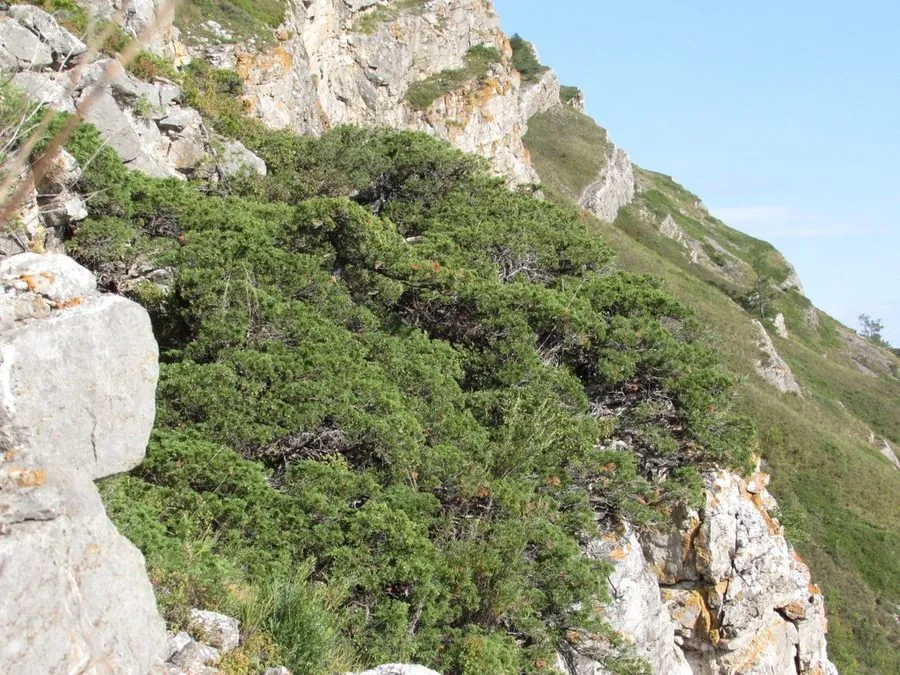

蕨类与裸子植物 · 植物界
沙地柏 Juniperus sabina

沙地柏是耐旱耐寒的匍匐柏类植物，枝条可以固沙保土，是北方干旱地区和沙地绿化中优良的针叶灌木。
- 分类
- 门裸子植物门纲松纲目松柏目科柏科属刺柏属
- 栖息环境
- 沙地、干旱山坡与草原，耐旱耐寒耐瘠薄
- 地理分布
- 中国西北、华北及欧洲、中亚等干旱地区
- 保护级别
- 暂无评估；生态修复与绿化树种
物种志
沙地柏是柏科常绿匍匐灌木，高 0.5–1 m，枝条平展或斜生，长可达数米。叶二型：幼枝上为刺形叶，三叶轮生；老枝上为鳞形叶，交叉对生。球果浆果状，近球形，成熟时褐色或蓝黑色，有白粉。整株低矮铺散，根系发达。
沙地柏分布于中国西北、华北干旱地区及欧洲、中亚，多生于沙地、干旱山坡与草原，耐旱、耐寒、耐瘠薄，根系发达，固沙保土能力强。它喜光照充足，对土壤要求不严，是北方干旱地区和沙地生态修复的优良灌木。沙地柏枝叶含挥发油，在民间作药用；它四季常绿、匍匐铺地，也可用于园林地被与护坡。由于其固沙价值，在生态工程中应用广泛。
形态与习性
- 株高0.5–1 m，匍匐生长
- 叶幼枝刺形，老枝鳞形
- 球果浆果状，成熟时褐或蓝黑
- 根系发达，固沙保土
- 用途沙地绿化与生态修复
趣味知识
- 沙地柏的枝条能贴地蔓延，根系发达，是固沙的好帮手。
- 它耐旱耐寒耐瘠薄，在北方沙地也能长得很好。
- 沙地柏的叶有刺形和鳞形两种，幼枝和老枝上不一样。